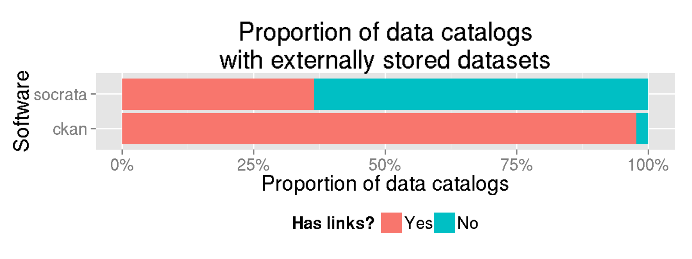
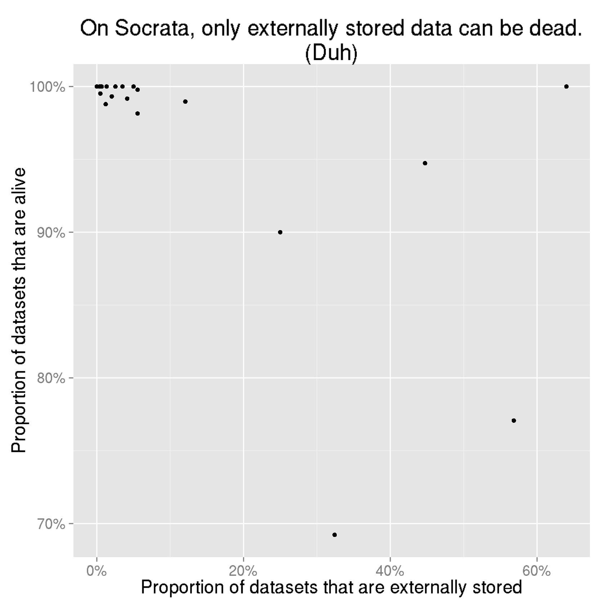
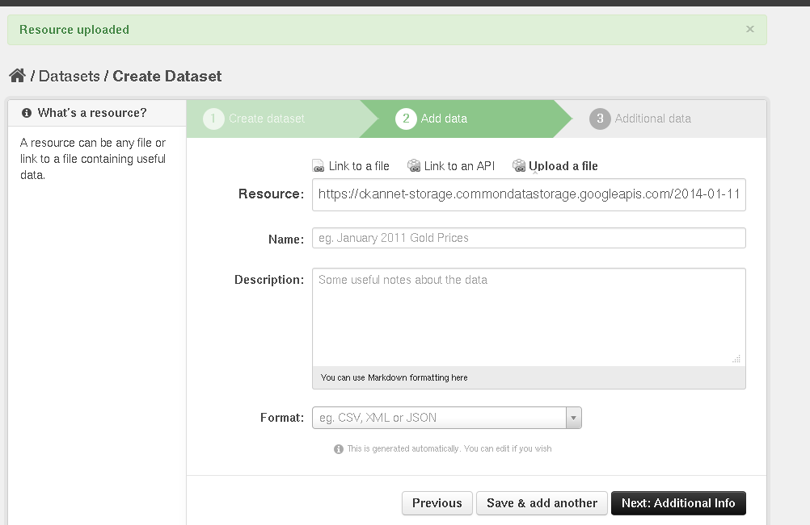

Dead links on data catalogs
The dead link counts in the present study seem wrong; you might want to wait a couple days while I review them. (January 17)
As I started looking at data on CKAN sites, I noticed that a lot of the datasets were links to files on other websites and that a lot of these links were dead. Then I started wondering which links were dead and how this happens.
Why study dead links
It goes without saying that websites usually shouldn’t have dead links, but here are a bunch of fancy reasons why dead links shouldn’t be on open data sites.
- Sunlight Foundation says to “Create permanent, lasting access to data”.
- Project Open Data says that data should be “Managed Post-Release”.
- The questions
for Open Knowledge Foundation’s Open Data Census include
- “Is the data available online?”
- “URL of data online?”
- The Open Data Institute Open Data Certificate questionnaire asks for a bunch of URLs about the dataset to be certified; I presume they should be alive. It also asks “How long will this data be available for?”
In summary, dead links are bad.
That said, if the alternative to having a dead link to a dataset is having no link to a dataset, I’d say it’s better to have the dead link so we know that the data exist. But live links are better; let’s move on.
Acquiring the data
I collected data about dead links from CKAN and Socrata catalogs; it went a bit like this.
The next few sections explain this a bit more.
Accessing data catalogs
I downloaded a list of Socrata catalogs (mirror) and a list of CKAN catalogs (mirror).
I tried querying the APIs for all of these sites. I couldn’t do this for some of the sites, mainly because they required authorization (lolz open data) that I did not have or because the URL I found for the catalog did not correspond with the domain for the CKAN or Socrata API. I continued with all of the sites for which I could get the data; this wound up being 44 CKAN catalogs and 52 Socrata catalogs.
Dataset metadata
With each of these catalogs, I acquired the metadata JSON file for each dataset in the catalog. Here they are for Socrata and for CKAN. These are also submodules to the main repository.
Link liveliness
From the metadata for each dataset, I pulled out the URL for the dataset if there was a URL. Here’s the code for Socrata and for CKAN.
I checked whether datasets were alive by trying to download them. (More precisely, I really issued a HEAD request and checked the status code.)
Internal versus external storage
Once I had the metadata files about each dataset, I also determined whether the dataset was stored internally or externally. These are terms that I just invented, so I define them below.
With internal storage, the dataset is uploaded to the data catalog software itself. In CKAN, the dataset gets stored in the FileStore, and in Socrata, the dataset gets stored in Socrata’s data storage. (There isn’t really a name for this place in Socrata’s architecture, as far as I know.)
With external storage, the dataset is a file that is stored on some other website on the internet, and we can reference the dataset with a URL. When we add the dataset to CKAN or Socrata, we are just linking to this other website.
As I imply above, Socrata and CKAN both support both of these two approaches.
Final database
I combined this all into the same SQLite3 file as I used for the Socrata products analysis.
Results
How many data catalogs have external links?
As I mention above, there are 52 Socrata catalogs. Of these, 19 (37%) have at least one externally stored dataset.
Of the 44 CKAN catalogs, 43 (98%) have at least one externally stored dataset.

That’s a big difference.
Link types and liveliness by catalog
Rather than looking at just whether there are any externally stored datasets at all, let’s now look at what proportion of the datasets are stored externally.
Whether a dataset is stored internally or externally is related to whether it stays alive. This is a plot of what proportion of datasets on Socrata are stored internally and what proportion of datasets are alive; each dot is a data catalog run by Socrata.

Socrata data catalogs with more externally stored data tend to have more dead links.
The above plot was for just Socrata; let’s see what happens when we add CKAN.
CKAN catalogs tend to have more externally stored data. When we add CKAN, the association between externally stored data and dead links continues.
Liveliness among externally stored data
Here’s another way of seeing the above relationship. Let’s look at only the externally stored datasets, and check what proportion of those are alive.

Catalogs with no external links appear as empty bars. This is ambiguous, because empty bars could also mean that there are external links but they’re all dead. Oh, well.
Some data catalogs are better than others, but about a quarter of externally stored datasets tend to be dead. Thus, when we make more externally stored datasets, we should expect more dead datasets.
Possibly interesting: the catalogs in this plot are ordered the same way they are in the earlier similar-looking plot, so higher catalogs are ones with fewer dead links.
Software suggests behavior
While both softwares support both storage methods, Socrata encourages the use of internal storage, and CKAN encourages the use of external storage. Let’s walk through how you create a dataset in both CKAN and Socrata through their respective web interfaces.
CKAN
In CKAN, this is the screen you get when you are specifying the data file for your dataset.
The first screen says nothing about how to enter the data, but the second one does.
You enter the URL of a file or an API,
or you upload a file.
After you upload the file, the box gets populated with the URL to which that has been uploaded. (This URL is inside the CKAN FileStore.)

The first two cases lead to external storage, and the third case leads to internal storage. CKAN does fancy things depending on whether you say it’s a file or an API and depending on the file format you tell it, but that’s separate from the issue of internal versus external storage.
As you might notice above, CKAN subtly encourages you to store things externally.
- There are two options for external storage but just one for internal.
- The two tabs for external storage options come before the third tab for internal storage.
- In the web interface, internally stored, uploaded files are treated like external links.
- One of the external storage options (the “Link to a file” tab) is selected by default when you arrive at the page.
CKAN is a bit subtle in encouraging external storage, but do keep this in mind.
Socrata
While externally stored data exist on Socrata, I didn’t find any way of creating such a dataset with the Socrata website. Here’s what creating a new dataset on Socrata looks like.
If you choose to “Design from Scratch”, you wind up entering the data through the table interface in Socrata; after you click through a few screens, you get an editor like this.
If you choose to “Import a Data File”, you see this.
Because I was looking for a place to add externally stored data, I clicked on “On the Internet”. I entered a file into this box, and the file got downloaded to Socrata.

Then I got this schema editor,
and the data got imported to the internal storage.
The non-data file approach also leads to internal storage.
I don’t even see any documentation as to how to do this with the API.
Socrata Support did send me an answer, but I need to log in to ZenDesk to do that (lolz open data again), and I was having trouble doing that.
So it’s pretty hard to add an externally stored dataset to Socrata.
Internal storage encourages live links
If your data are stored in CKAN’s FileStore or in Socrata’s data storage (rather than as an external link), then it is practically impossible for the link to be dead.
If we want to use fancy design-speak, we can call this a forcing function. A forcing function is an aspect in the design of a thing that makes it impossible for people to do something that they aren’t supposed to do. If we make it impossible for links to be dead, they won’t ever be dead.
Other ways of encouraging live links
Removing the external link feature should reduce the number of dead links to zero, and that might be nice. On the other hand, there might be some good things about external links, so maybe we can instead come up with some other software feature that helps people avoid or fix dead links. For example, perhaps there could be a page that lists the dead datasets and counts how many times people have tried accessing them.
The CKAN Quality Assurance Extension does just this; here’s one of its reports.
Why measure data catalogs
Detecting dead links is one of several things that we can easily do to measure the quality of a data catalog. Similarly, we can also measure what licenses are used, how up-to-date the data are, and what data formats the data are in.
When we have lots of datasets on our data catalog, it becomes too much for someone to read through all of them. Measures like these help us get some idea of what is going on across the data catalog. They also help us choose where to focus our attention, so that we may identify good practices and diagnose problems.